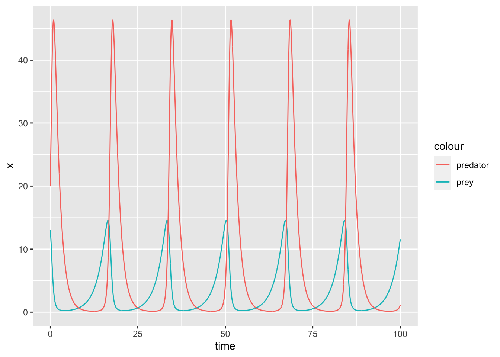
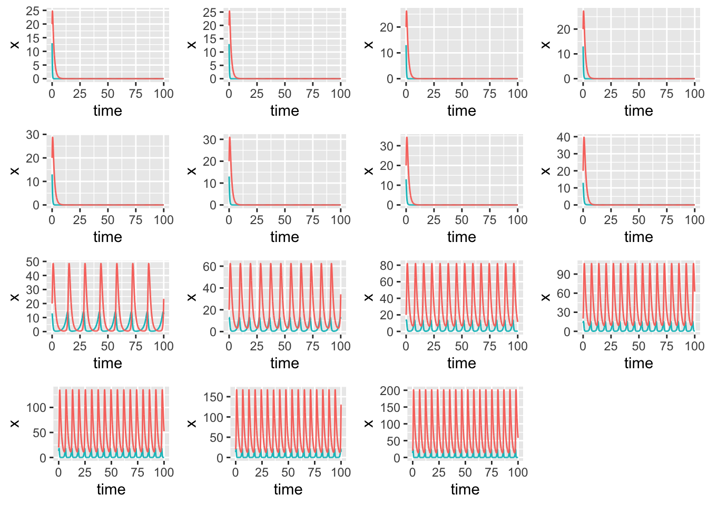
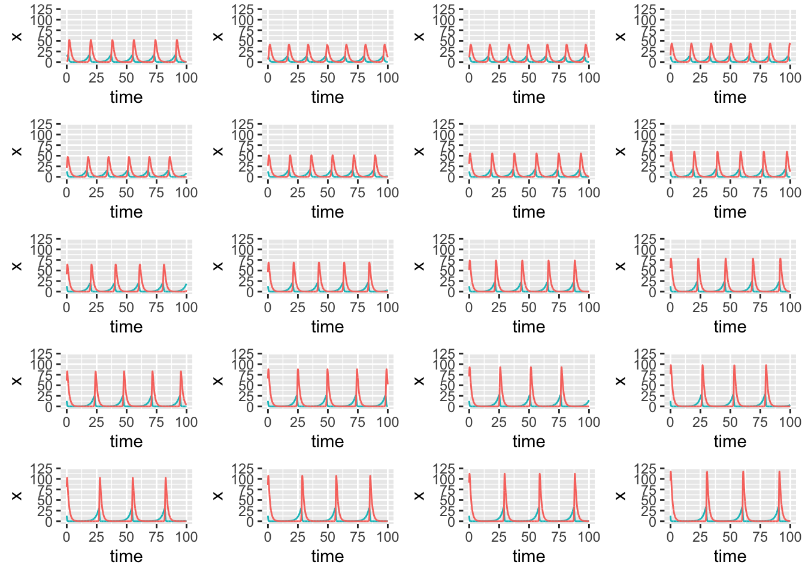

library(ggplot2)
library(gridExtra)The Lotka-Volterra predator-prey equations are a set of differential equations that describe the change in population size over time \(t\), for a prey species (\(x\)) and a predator species (\(y\)). Prey species decline according to an interaction rate \(\beta\) and increase according to their growth rate \(\alpha\). Predator species benefit from growth due to consumption of prey according to a rate \(\delta\) and decline due to an intrinsic mortality rate \(\gamma\). The equations are as follows:
\[\begin{eqnarray} \frac{dx}{dt} = \alpha x- \beta xy \\ \frac{dy}{dt} = \delta xy - \gamma y \end{eqnarray}\]
| Parameter | Description | range |
|---|---|---|
| \(\alpha\) | prey population growth rate | \([-\infty, \infty]\) |
| \(\beta\) | death rate per encounter with rabbits | \([0,1]\) |
| \(\delta\) | Conversion efficiency (of prey into predator) | \([in progress]\) |
| \(\gamme\) | predator population death rate | \([-\infty, \infty]\) |
| —————— | ———————————————— | ——————— |
| State variable | Description | range |
| —————— | ———————————————— | ——————— |
| \(x\) | prey population size | \([0, \infty]\) |
| \(y\) | predator population size | \([0, \infty]\) |
## Lotka Volterra predator-prey equations
LV_pred_prey <- function(t, state, parameters) {
with(as.list(c(state, parameters)), {
dx <- a*x - b*x*y
dy <- d*x*y - g*y
return(list(c(dx,dy)))
})
}
parameters <- c(a = .4, b = .05, d = .2, g = .7)
state <- c(x = 13, y = 20)
times <- seq(0, 100, by = 0.01)
out <- deSolve::ode(y = state, times = times, func = LV_pred_prey, parms = parameters)
out.g <- as.data.frame(out)
ggplot2::ggplot(out.g,aes(time,x, colour = "prey")) + geom_line() +
geom_line(aes(time,y, colour = "predator"))
# Across a range of alpha values
a_range <- seq(-3.5, 3.5, by = 0.5)
out.g <- array(NA,dim=c(length(times)*length(a_range),4),dimnames=list(NULL,c("time","x","y","r")))
for(i in 1:length(a_range)){
parameters <- c(a = a_range[i], b = .05, d = .2, g = .7)
out <- deSolve::ode(y = state, times = times, func = LV_pred_prey, parms = parameters)
out2 <- as.data.frame(out)
out.g[(((length(times) * i)+1) - length(times)):(length(times) * i),4] <- a_range[i]
out.g[(((length(times) * i)+1) - length(times)):(length(times) * i),1:3] <- out[,]
}
out.g <- as.data.frame(out.g)
# Now plot for all alpha values
p <- list()
for(i in 1:length(a_range)){
sub <- out.g[]
p[[i]] <- ggplot2::ggplot(out.g[out.g$r==a_range[i],],aes(time,x, colour = "prey")) + geom_line() + geom_line(aes(time,y, colour = "predator")) + guides(colour = "none")
}
do.call(grid.arrange,p)
# Across a range of y0 values
y0_range <- seq(1, 100, by = 5)
out.g <- array(NA,dim=c(length(times)*length(y0_range),4),dimnames=list(NULL,c("time","x","y","r")))
for(i in 1:length(y0_range)){
parameters <- c(a = .4, b = .05, d = .2, g = .7)
state <- c(x = 13, y = y0_range[i])
out <- deSolve::ode(y = state, times = times, func = LV_pred_prey, parms = parameters)
out2 <- as.data.frame(out)
out.g[(((length(times) * i)+1) - length(times)):(length(times) * i),4] <- y0_range[i]
out.g[(((length(times) * i)+1) - length(times)):(length(times) * i),1:3] <- out[,]
}
out.g <- as.data.frame(out.g)
# Now plot for all alpha values
p <- list()
for(i in 1:length(y0_range)){
sub <- out.g[]
p[[i]] <- ggplot2::ggplot(out.g[out.g$r==y0_range[i],],aes(time,x, colour = "prey")) + geom_line() + geom_line(aes(time,y, colour = "predator")) + guides(colour = "none") + ylim(0, 120)
}
do.call(gridExtra::grid.arrange,p)
Its difficult to understand all model dynamics just by visualizing plotted results across parameter value ranges (especially in models with more and more parameters). We turn to equilibrium analysis to understand the steady states of the system. Equilibrium occurs when neither of the population levels is changing. THe equilibrium solutions can be calculated by determining when the rates of change equal 0:
\[\begin{eqnarray} \frac{dx}{dt} = \alpha x- \beta xy = 0 = x(\alpha - \beta y) \\ \frac{dy}{dt} = \delta xy - \gamma y = 0 = -y(\gamma - \delta x) \end{eqnarray}\]
This system has two sets of equilibrium solutions:
\[ \begin{eqnarray} \{y = 0, x = 0\} \\ \{y=\frac{\alpha}{\beta},x = \frac{\gamma}{\delta}\} \end{eqnarray}\]
Its beyond the scope of this class to interpret these equilibrium results in this model. Ultimately, it means that we can identify if the 2 species coexist (and what values of population size they persist at) based on the parameter values.